Daniel series — 18 illustrated Shorts (preview)
Preview only, not posted anywhere. Pastor David G. Kincer. Reworked to ~2 minutes each so the speaker has time to make the point. Hard-content and context rules applied. Preview only — nothing posted.
Success in Tragedies Part 1
Daniel: How did he get there, and is America under siege?
Our short summary of this clip, not the preacher's exact words
Short answer: Daniel’s fiery-furnace and lions’-den moments rest on earlier character. Pastor Kincer says most people zip over Daniel 1, but the Scriptures were written for our learning. He says America is under siege not by an army but by philosophies: he names homosexuals with a powerful voice undermining the Scriptures, and atheists teaming with homosexuals, socialists and hedonists to destroy the Bible, plus evolution science he says has no proof, and that without God people invent their own right and wrong.
Why: He opens with the lions’ den and fiery furnace, asks how Daniel got where God used him, then applies Daniel 1 to America’s philosophical siege — so the point lands with its full context.
“But have you ever really thought about how Daniel got to the place where God used him?”
▶ 0:16
“That we through patience and comfort of the scriptures might have hope.”
▶ 0:49
“Bible, the scriptures, and undermining them in America.”
▶ 4:50
“us the scriptures of what is right and what is wrong.”
▶ 6:26
“But they all gang up to the undermine the Bible and Jesus Christ, the pro-choice people.”
▶ 7:28
Romans 15:4 For whatever things were written before were written for our learning, that we through the patience and comfort of the Scriptures might have hope.
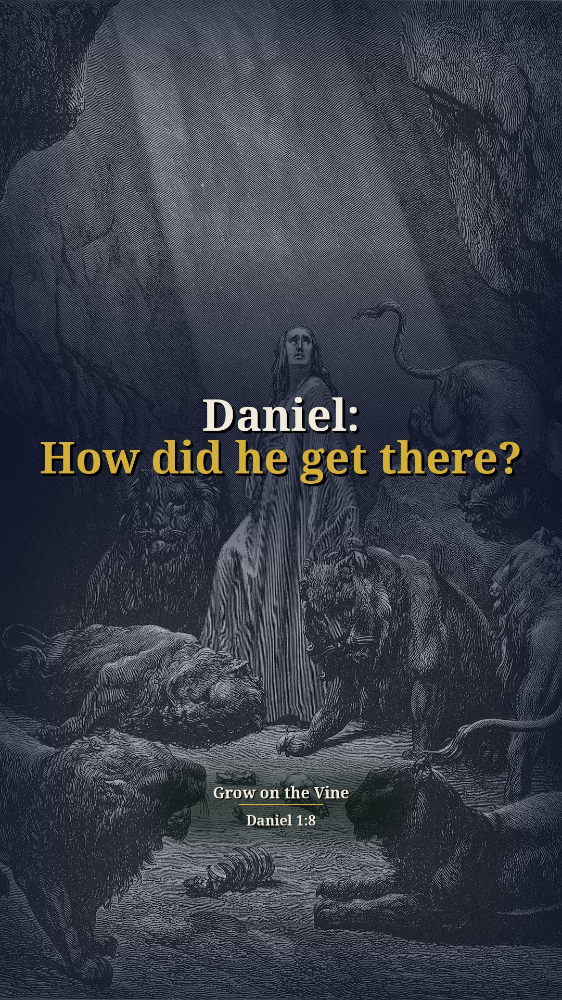
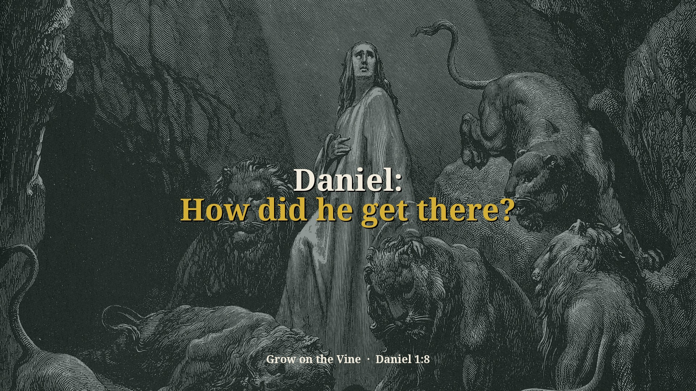
Other title options:
- Daniel: How did he get there?
- Daniel: Who is undermining the Bible?
YouTube description (draft)
Daniel: How did he get there, and is America under siege? Read the short answer, the Scripture (NKJV) and the pastor's own words: https://growonthevine.com/clips/daniel-how-did-he-get-there/ To see the full message, click here: https://www.youtube.com/watch?v=pNWWSCyAUs0&t=0s Daniel’s fiery-furnace and lions’-den moments rest on earlier character. Pastor Kincer says most people zip over Daniel 1, but the Scriptures were written for our learning. He says America is under siege not by an army but by philosophies: he names homosexuals with a powerful voice undermining the Scriptures, and atheists teaming with homosexuals, socialists and hedonists to destroy the Bible, plus evolution science he says has no proof, and that without God people invent their own right and wrong. Romans 15:4 (NKJV) Pastor David G. Kincer · Grow on the Vine Music: "Wholesome" Kevin MacLeod (incompetech.com) Licensed under Creative Commons: By Attribution 4.0 License http://creativecommons.org/licenses/by/4.0/ #Shorts #Bible #Jesus
Daniel: Is the church in America defiling itself?
Our short summary of this clip, not the preacher's exact words
Short answer: Pastor Kincer points to California’s Prop 8: only 52% voted that marriage is between a man and a woman, while most Americans say they believe in God. He says the church won’t preach that homosexuality is a sin on TV or radio for fear of losing the audience, and that Daniel purposed in his heart not to defile himself with the king’s food — a picture of refusing to join the culture’s compromise.
Why: He ties America’s marriage vote and the quiet church to Daniel 1:8, so the charge that the church is defiling itself has the reason behind it.
“He burned uh Jeremiah's script prophecies, the scriptures.”
▶ 12:00
“America believe in a god.”
▶ 12:30
“There's something wrong in the church, isn't there?”
▶ 12:55
“The church in America is defiling itself by not following the things of God.”
▶ 13:05
“Jesus himself said, his first message in Matthew, "Repent and what?”
▶ 14:21
Daniel 1:8 But Daniel purposed in his heart that he would not defile himself with the portion of the king’s meat, nor with the wine which he drank: therefore he requested of the prince of the eunuchs that he might not defile himself.
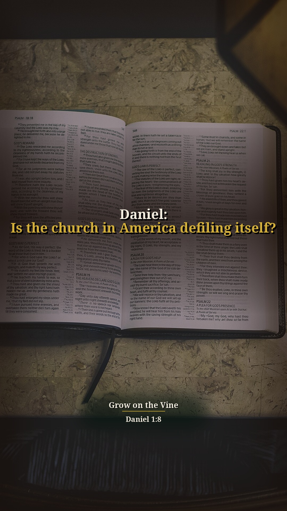
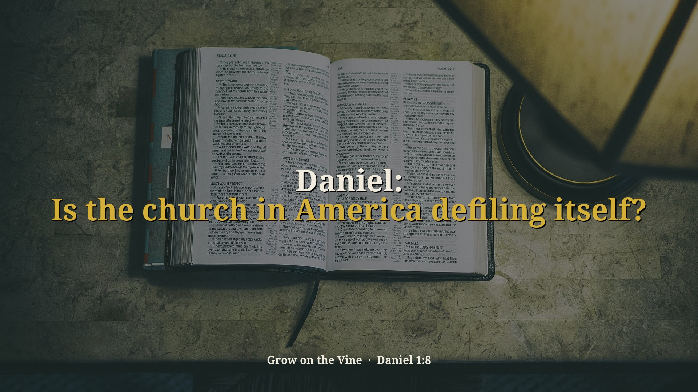
Other title options:
- Daniel: Why did only 52% vote for marriage?
- Daniel: Can you preach that sin is wrong on TV?
YouTube description (draft)
Daniel: Is the church in America defiling itself? Read the short answer, the Scripture (NKJV) and the pastor's own words: https://growonthevine.com/clips/daniel-is-the-church-defiling-itself/ To see the full message, click here: https://www.youtube.com/watch?v=pNWWSCyAUs0&t=700s Pastor Kincer points to California’s Prop 8: only 52% voted that marriage is between a man and a woman, while most Americans say they believe in God. He says the church won’t preach that homosexuality is a sin on TV or radio for fear of losing the audience, and that Daniel purposed in his heart not to defile himself with the king’s food — a picture of refusing to join the culture’s compromise. Daniel 1:8 (NKJV) Pastor David G. Kincer · Grow on the Vine Music: "Windswept" Kevin MacLeod (incompetech.com) Licensed under Creative Commons: By Attribution 4.0 License http://creativecommons.org/licenses/by/4.0/ #Shorts #Bible #Jesus
Daniel: What was done to Daniel, and is it happening here?
Our short summary of this clip, not the preacher's exact words
Short answer: Daniel was led away captive, made a slave, and made a eunuch — forced to change his sexual orientation. Pastor Kincer asks if that is happening in America through public schools pressuring young people toward homosexuality and transvestitism. He then asks who still wants to be a Daniel when that cost is clear, and says most of us want the miracles without the suffering that built Daniel’s character.
Why: The captivity and castration of Daniel are the context for the altar call to be a Daniel, so viewers hear both the cost and the challenge.
“Now, not only was Daniel led away captive, made a slave, he was made a eunuch.”
▶ 16:45
“Is that happening in America?”
▶ 17:11
“Now, you want to be a Daniel?”
▶ 18:39
“We just want to be people that can go through the fire and people that go into the”
▶ 18:47
“Do we blame everything in America?”
▶ 20:07
John 16:33 These things I have spoken to you, that in Me you may have peace. In the world you will have tribulation; but be of good cheer, I have overcome the world.”
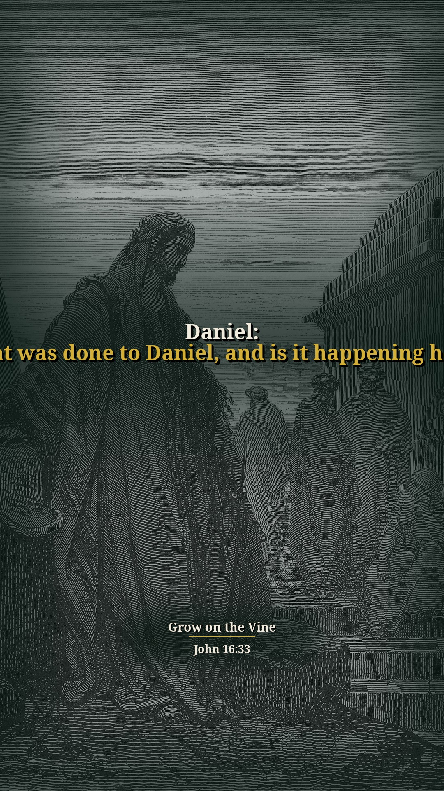
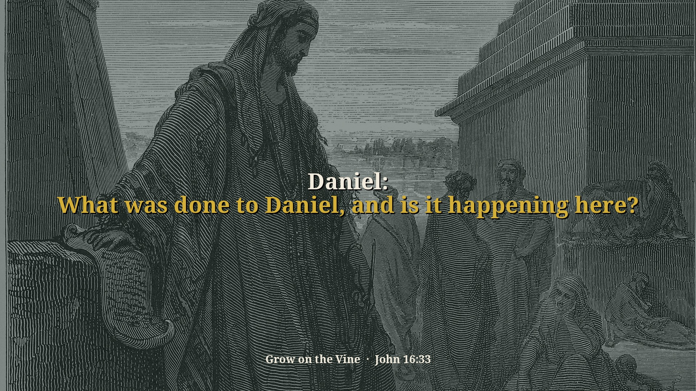
Other title options:
- Daniel: Do you want to be like Daniel?
- Daniel: Was Daniel made a eunuch?
YouTube description (draft)
Daniel: What was done to Daniel, and is it happening here? Read the short answer, the Scripture (NKJV) and the pastor's own words: https://growonthevine.com/clips/daniel-do-you-want-to-be/ To see the full message, click here: https://www.youtube.com/watch?v=pNWWSCyAUs0&t=1005s Daniel was led away captive, made a slave, and made a eunuch — forced to change his sexual orientation. Pastor Kincer asks if that is happening in America through public schools pressuring young people toward homosexuality and transvestitism. He then asks who still wants to be a Daniel when that cost is clear, and says most of us want the miracles without the suffering that built Daniel’s character. John 16:33 (NKJV) Pastor David G. Kincer · Grow on the Vine Music: "Dreamer" Kevin MacLeod (incompetech.com) Licensed under Creative Commons: By Attribution 4.0 License http://creativecommons.org/licenses/by/4.0/ #Shorts #Bible #Jesus
Daniel: What built his results, and why never complain?
Our short summary of this clip, not the preacher's exact words
Short answer: Pastor Kincer says there is no record of Daniel blaming his forefathers or politics for the tragedy. He contrasts America’s blame game — Republicans vs Democrats, Catholics vs Protestants — with Daniel’s character that never complained. That character, not just one prayer moment, is what built the results: Daniel stayed himself serving God even after the righteous lost their nation, rights and freedom, and after he and his friends were castrated.
Why: The blame-game contrast and the castration context explain why ‘never complain’ is more than a slogan — it is the character that produced Daniel’s results.
“Do we blame everything in America?”
▶ 20:07
“Has Daniel got your attention yet?”
▶ 23:15
“They're besieged and Daniel didn't drop out of education and he never dropped out of following God.”
▶ 24:03
“No wonder they were used to God, wouldn't you say?”
▶ 25:50
“Daniel, Monday through Friday, went to school, got under the teachers when he was starving, losing everything.”
▶ 26:07
Daniel 1:8 But Daniel purposed in his heart that he would not defile himself with the portion of the king’s meat, nor with the wine which he drank: therefore he requested of the prince of the eunuchs that he might not defile himself.
Philippians 2:14-15 Do all things without complaining and disputing, that you may become blameless and harmless, children of God without fault in the midst of a crooked and perverse generation, among whom you shine as lights in the world,
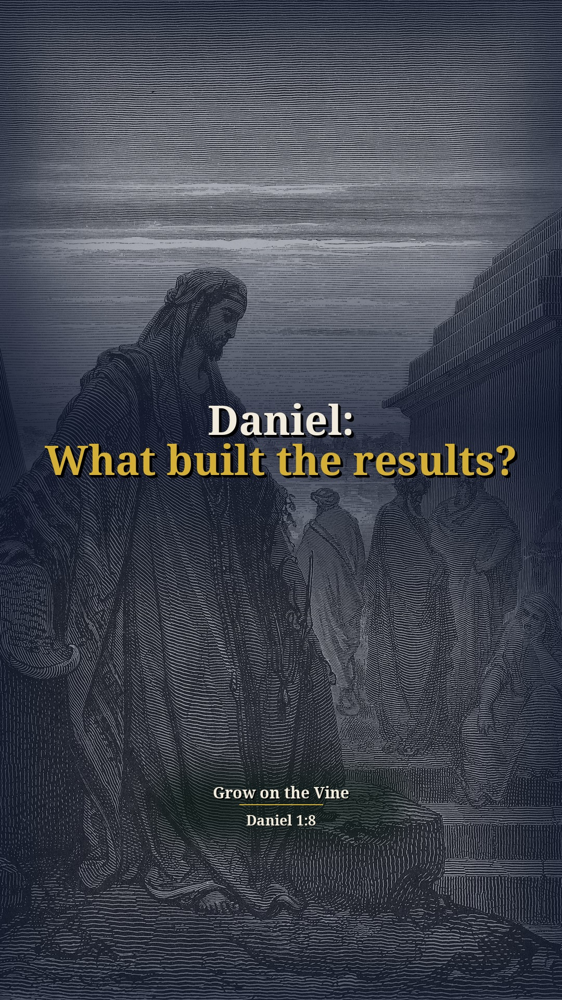
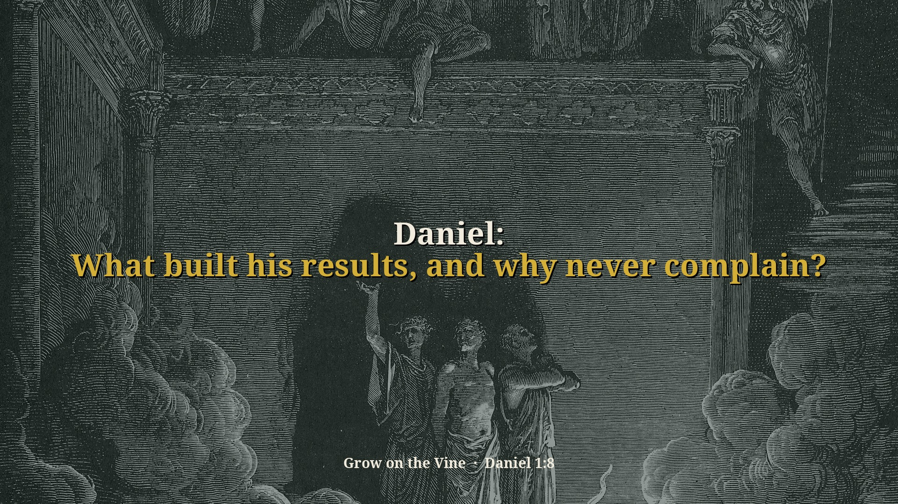
Other title options:
- Daniel: What built the results?
- Daniel: Why did Daniel never blame?
YouTube description (draft)
Daniel: What built his results, and why never complain? Read the short answer, the Scripture (NKJV) and the pastor's own words: https://growonthevine.com/clips/daniel-what-built-the-results/ To see the full message, click here: https://www.youtube.com/watch?v=pNWWSCyAUs0&t=1207s Pastor Kincer says there is no record of Daniel blaming his forefathers or politics for the tragedy. He contrasts America’s blame game — Republicans vs Democrats, Catholics vs Protestants — with Daniel’s character that never complained. That character, not just one prayer moment, is what built the results: Daniel stayed himself serving God even after the righteous lost their nation, rights and freedom, and after he and his friends were castrated. Daniel 1:8 (NKJV) Pastor David G. Kincer · Grow on the Vine Music: "Resolutions Scott Buckley" Kevin MacLeod (incompetech.com) Licensed under Creative Commons: By Attribution 4.0 License http://creativecommons.org/licenses/by/4.0/ #Shorts #Bible #Jesus
Success in Tragedies Part 2
Daniel: Would you keep the little things?
Our short summary of this clip, not the preacher's exact words
Short answer: Daniel kept even the ‘shadow law’ food rules because the king’s food had been offered to idols. Pastor Kincer says character shows in the little things: if you won’t obey God in diet and idol-food when nobody is watching, you won’t stand when the furnace comes. Purpose in the small is what prepared Daniel for the great tests.
Why: The idol-food refusal is the little-thing obedience that later explains the furnace stand — so both the rule and the reason are in the Short.
“And they were taught not to eat any kind of food sacrificed to another god and idol.”
▶ 13:39
“been offered to idols, or it was a catfish or an eagle or some animal that they weren't”
▶ 13:54
“They were asking him to eat something that his god said, "No.”
▶ 14:20
“Didn't Jesus say, "They that keep the least of these commandments"?”
▶ 14:32
“So, Daniel purposed not to defile himself.”
▶ 14:42
Daniel 1:8 But Daniel purposed in his heart that he would not defile himself with the portion of the king’s meat, nor with the wine which he drank: therefore he requested of the prince of the eunuchs that he might not defile himself.
Matthew 5:19 Whoever therefore breaks one of the least of these commandments, and teaches men so, shall be called least in the kingdom of heaven; but whoever does and teaches them, he shall be called great in the kingdom of heaven.
Other title options:
- Daniel: Does a small “no” matter?
- Daniel: What if the test looks minor?
YouTube description (draft)
Daniel: Would you keep the little things? Read the short answer, the Scripture (NKJV) and the pastor's own words: https://growonthevine.com/clips/daniel-would-you-keep-the-little-things/ To see the full message, click here: https://www.youtube.com/watch?v=Kry7LWfO39Y&t=790s Daniel kept even the ‘shadow law’ food rules because the king’s food had been offered to idols. Pastor Kincer says character shows in the little things: if you won’t obey God in diet and idol-food when nobody is watching, you won’t stand when the furnace comes. Purpose in the small is what prepared Daniel for the great tests. Daniel 1:8 (NKJV) Pastor David G. Kincer · Grow on the Vine Music: "Faith In Tomorrow" Kevin MacLeod (incompetech.com) Licensed under Creative Commons: By Attribution 4.0 License http://creativecommons.org/licenses/by/4.0/ #Shorts #Bible #Jesus
Daniel: Would you spare your enemy, and what was the reward?
Our short summary of this clip, not the preacher's exact words
Short answer: Daniel cared that the keeper who enslaved him would not die for his stand. Pastor Kincer calls that character — and God honored it so both lived and Daniel stayed undefiled. God gave them knowledge, skill, learning, and wisdom — ten times better than the rest — and Daniel understanding in visions and dreams. Daniel did not leave Judah already seeing dreams and visions. Pastor Kincer says he received them when he purposed to obey God even in a little thing.
Why: After ten days they looked healthier than those who ate the king’s meat. God backed Daniel’s principle. The gift followed commitment and a good attitude under pressure — not the other way around.
“This Daniel's got character, folks.”
▶ 16:14
“Are you Are you out there?”
▶ 16:37
“that eat the portion of the king's meat.”
▶ 16:50
“Verse 17, God gave all three of them knowledge, skill and learning and wisdom, and I already defined”
▶ 17:24
“Now, what are dreams and visions?”
▶ 18:34
Daniel 1:12-15 “Please test your servants for ten days, and let them give us vegetables to eat and water to drink. Then let our appearance be examined before you, and the appearance of the young men who eat the portion of the king’s delicacies; and as you see fit, so deal with your servants.” So he consented with them in this matter, and tested them ten days. And at the end of ten days their features appeared better and fatter in flesh than all the young men who ate the portion of the king’s delicacies.
Daniel 1:17-20 As for these four young men, God gave them knowledge and skill in all literature and wisdom; and Daniel had understanding in all visions and dreams. Now at the end of the days, when the king had said that they should be brought in, the chief of the eunuchs brought them in before Nebuchadnezzar. Then the king interviewed them, and among them all none was found like Daniel, Hananiah, Mishael, and Azariah; therefore they served before the king. And in all matters of wisdom and understanding about which the king examined them, he found them ten times better than all the magicians and astrologers who were in all his realm.
Daniel 1:17 As for these four young men, God gave them knowledge and skill in all literature and wisdom; and Daniel had understanding in all visions and dreams.
Amos 3:7 Surely the Lord God does nothing, Unless He reveals His secret to His servants the prophets.
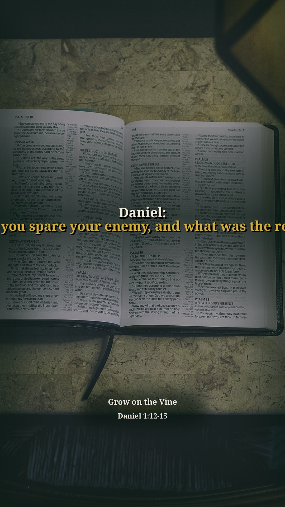
Other title options:
- Daniel: Would you spare your enemy?
- Daniel: When do the visions come?
YouTube description (draft)
Daniel: Would you spare your enemy, and what was the reward? Read the short answer, the Scripture (NKJV) and the pastor's own words: https://growonthevine.com/clips/daniel-would-you-spare-your-enemy/ To see the full message, click here: https://www.youtube.com/watch?v=Kry7LWfO39Y&t=973s Daniel cared that the keeper who enslaved him would not die for his stand. Pastor Kincer calls that character — and God honored it so both lived and Daniel stayed undefiled. God gave them knowledge, skill, learning, and wisdom — ten times better than the rest — and Daniel understanding in visions and dreams. Daniel did not leave Judah already seeing dreams and visions. Pastor Kincer says he received them when he purposed to obey God even in a little thing. Daniel 1:12-15 (NKJV) Pastor David G. Kincer · Grow on the Vine Music: "Clean Soul" Kevin MacLeod (incompetech.com) Licensed under Creative Commons: By Attribution 4.0 License http://creativecommons.org/licenses/by/4.0/ #Shorts #Bible #Jesus
War of the Wise Part 1
Daniel: Does it still pay to serve God?
Our short summary of this clip, not the preacher's exact words
Short answer: He says it was a war between the occult and intellectuals versus four young Hebrews; God's people had lost everything and it looked like it didn't pay to serve God. America is in that season: Jesus is put down by comedians, atheists and actors and the Bible laughed at, but if we watch what God did in Daniel we will know what He can do in America.
Why: God corrects His people and confronts the unbeliever; He changes the times and the seasons (Daniel 2:21).
“Now, you must remember that God's people have lost their jobs.”
▶ 0:15
“Things are not looking too good for the people of God.”
▶ 0:42
“of them, the majority, were sinning, disobeying God, violating scripture.”
▶ 1:47
“It looks as though the church in America is losing the war of righteousness.”
▶ 2:10
“And if we can watch what God does in the midst of this condition in Daniel, we will”
▶ 2:38
Daniel 2:21 And He changes the times and the seasons; He removes kings and raises up kings; He gives wisdom to the wise And knowledge to those who have understanding.
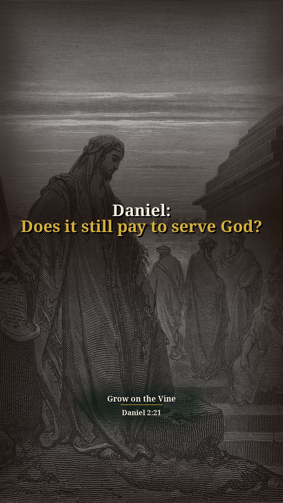
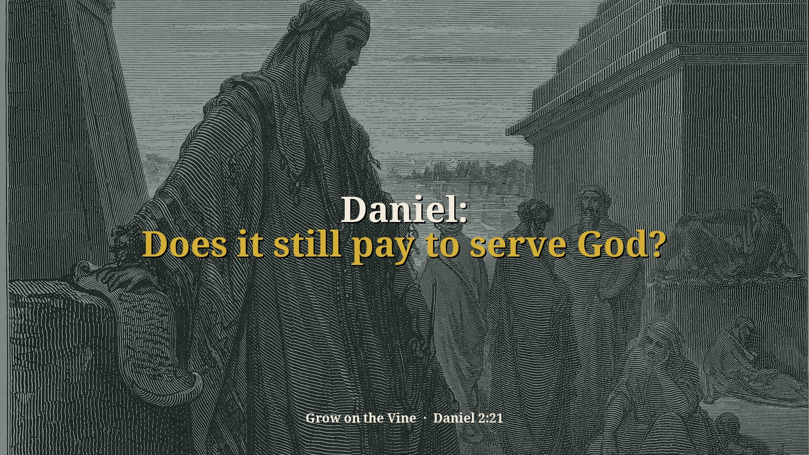
Other title options:
- Daniel: Is the church losing the war of righteousness?
- Daniel: What will God do for America?
YouTube description (draft)
Daniel: Does it still pay to serve God? Read the short answer, the Scripture (NKJV) and the pastor's own words: https://growonthevine.com/clips/daniel-does-it-pay-to-serve-god/ To see the full message, click here: https://www.youtube.com/watch?v=M0PKQYTTstU&t=1s He says it was a war between the occult and intellectuals versus four young Hebrews; God's people had lost everything and it looked like it didn't pay to serve God. America is in that season: Jesus is put down by comedians, atheists and actors and the Bible laughed at, but if we watch what God did in Daniel we will know what He can do in America. Daniel 2:21 (NKJV) Pastor David G. Kincer · Grow on the Vine Music: "Windswept" Kevin MacLeod (incompetech.com) Licensed under Creative Commons: By Attribution 4.0 License http://creativecommons.org/licenses/by/4.0/ #Shorts #Bible #Jesus
Daniel: Where does wisdom come from, and who raises up kings?
Our short summary of this clip, not the preacher's exact words
Short answer: Wisdom and might belong to God. Pastor Kincer says you will not get that strength at the university or in high school — you get it from Him and His word. God removes and raises up kings. Pastor Kincer says change starts with us — if His people humble themselves, pray, seek His face, and turn from wicked ways.
Why: Daniel’s revelation is that God changes times and seasons and gives leaders according to how people live; 2 Chronicles 7:14 is the path back.
“Number one, verse 20 through 21, Daniel says, "Wisdom and might are his." Wisdom and might, strength, belong”
▶ 8:28
“And Daniel's revelation is God changes times and seasons.”
▶ 10:24
“If we want to change, where does change start?”
▶ 11:07
“But see, the American church right now only wants to pray and believe.”
▶ 11:30
“You want knowledge and understanding, you got to go to God, you got to go to the scriptures.”
▶ 11:50
Daniel 2:20-21 Daniel answered and said: “Blessed be the name of God forever and ever, For wisdom and might are His. And He changes the times and the seasons; He removes kings and raises up kings; He gives wisdom to the wise And knowledge to those who have understanding.
Daniel 2:21 And He changes the times and the seasons; He removes kings and raises up kings; He gives wisdom to the wise And knowledge to those who have understanding.
2 Chronicles 7:14 if My people who are called by My name will humble themselves, and pray and seek My face, and turn from their wicked ways, then I will hear from heaven, and will forgive their sin and heal their land.
Other title options:
- Daniel: Who raises up kings?
- Daniel: Where does wisdom come from?
YouTube description (draft)
Daniel: Where does wisdom come from, and who raises up kings? Read the short answer, the Scripture (NKJV) and the pastor's own words: https://growonthevine.com/clips/daniel-who-raises-up-kings/ To see the full message, click here: https://www.youtube.com/watch?v=M0PKQYTTstU&t=508s Wisdom and might belong to God. Pastor Kincer says you will not get that strength at the university or in high school — you get it from Him and His word. God removes and raises up kings. Pastor Kincer says change starts with us — if His people humble themselves, pray, seek His face, and turn from wicked ways. Daniel 2:20-21 (NKJV) Pastor David G. Kincer · Grow on the Vine Music: "Morning" Kevin MacLeod (incompetech.com) Licensed under Creative Commons: By Attribution 4.0 License http://creativecommons.org/licenses/by/4.0/ #Shorts #Bible #Jesus
Daniel: Can astrologers and sorcerers reveal secrets?
Our short summary of this clip, not the preacher's exact words
Short answer: Babylon’s wisest counselors could not tell the king his forgotten dream. Pastor Kincer says God started turning things around by exposing empty wisdom. He explains the astrologers read the stars and the zodiac as people do today, necromancers talk with the spirits of the dead, sorcerers cast spells and some are demonically influenced, and the Chaldeans were the secular intellectuals. Even Babylon’s intellectuals admitted only a God whose dwelling is not with men could reveal the secret. Pastor Kincer says they acknowledged a supernatural God in heaven.
Why: Nebuchadnezzar demanded both dream and interpretation; when the magicians and Chaldeans could not, he sentenced them to die as phonies. Daniel and the three Hebrews were swept into the death sentence as royal counselors — yet the Chaldeans themselves confessed no idol-god or occult power could do what the king asked.
“But suddenly, God starts turning things around.”
▶ 3:10
“You're supposed to be the the counselors of a king and know everything and you can't even tell”
▶ 3:57
“They admit that no one can do what the king ask, interpreting a dream without being told the”
▶ 5:32
“See, they're acknowledging that there is a God in heaven, there is a supernatural God.”
▶ 5:44
“They're agreeing that no idol God.”
▶ 5:58
Daniel 2:10-11 The Chaldeans answered the king, and said, “There is not a man on earth who can tell the king’s matter; therefore no king, lord, or ruler has ever asked such things of any magician, astrologer, or Chaldean. It is a difficult thing that the king requests, and there is no other who can tell it to the king except the gods, whose dwelling is not with flesh.”
Daniel 2:11 It is a difficult thing that the king requests, and there is no other who can tell it to the king except the gods, whose dwelling is not with flesh.”
Daniel 2:28 But there is a God in heaven who reveals secrets, and He has made known to King Nebuchadnezzar what will be in the latter days. Your dream, and the visions of your head upon your bed, were these:
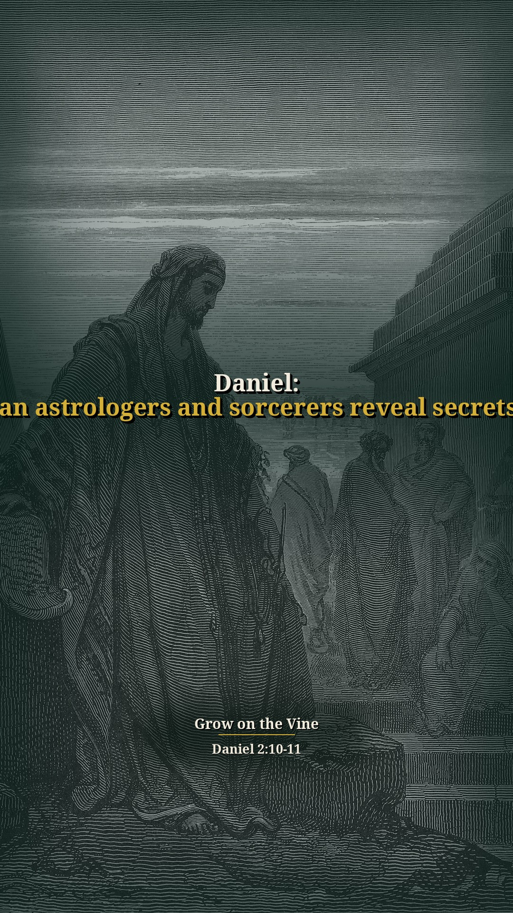
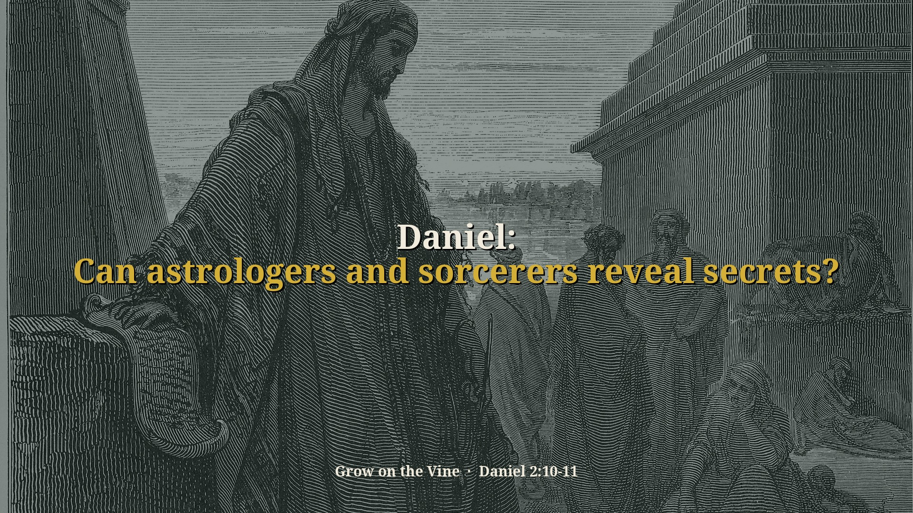
Other title options:
- Daniel: Who can reveal secrets?
- Daniel: Can wise men save you?
YouTube description (draft)
Daniel: Can astrologers and sorcerers reveal secrets? Read the short answer, the Scripture (NKJV) and the pastor's own words: https://growonthevine.com/clips/daniel-can-wise-men-save-you/ To see the full message, click here: https://www.youtube.com/watch?v=M0PKQYTTstU&t=190s Babylon’s wisest counselors could not tell the king his forgotten dream. Pastor Kincer says God started turning things around by exposing empty wisdom. He explains the astrologers read the stars and the zodiac as people do today, necromancers talk with the spirits of the dead, sorcerers cast spells and some are demonically influenced, and the Chaldeans were the secular intellectuals. Even Babylon’s intellectuals admitted only a God whose dwelling is not with men could reveal the secret. Pastor Kincer says they acknowledged a supernatural God in heaven. Daniel 2:10-11 (NKJV) Pastor David G. Kincer · Grow on the Vine Music: "Simple Duet" Kevin MacLeod (incompetech.com) Licensed under Creative Commons: By Attribution 4.0 License http://creativecommons.org/licenses/by/4.0/ #Shorts #Bible #Jesus
War of the Wise Part 2
Daniel: Is there an answer, and will God visit again?
Our short summary of this clip, not the preacher's exact words
Short answer: Yes — His name is Jesus. Pastor Kincer says if we humble ourselves, pray, seek His face, and turn from our wicked ways, He will heal the church and America. Yes. Pastor Kincer says it pays to serve Jesus, and like Joseph’s word “God will truly visit you,” God will visit His church again — this is not over.
Why: He refuses an escape-only hope; he expects God to move, restore the church, and draw unbelievers in another visitation.
“I talked to so many people, well, there's no answer for America, and there's no answer for the”
▶ 24:39
“And those that serve Jesus Christ are the answer to the churches' tragedies and the American tragedies.”
▶ 25:45
“you hear that, young people?”
▶ 26:18
“God will visit His church again.”
▶ 26:54
“I can't tell you how it will come, but I know those scriptures and I know God.”
▶ 27:20
2 Chronicles 7:14 if My people who are called by My name will humble themselves, and pray and seek My face, and turn from their wicked ways, then I will hear from heaven, and will forgive their sin and heal their land.
Genesis 50:24 And Joseph said to his brethren, “I am dying; but God will surely visit you, and bring you out of this land to the land of which He swore to Abraham, to Isaac, and to Jacob.”
1 Kings 2:2-3 “I go the way of all the earth; be strong, therefore, and prove yourself a man. And keep the charge of the Lord your God: to walk in His ways, to keep His statutes, His commandments, His judgments, and His testimonies, as it is written in the Law of Moses, that you may prosper in all that you do and wherever you turn;
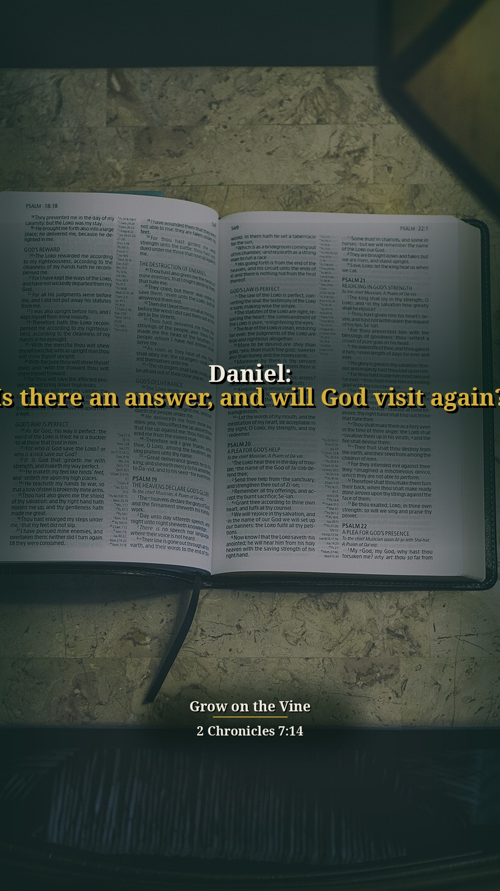
Other title options:
- Daniel: Is there an answer?
- Daniel: Will God visit again?
YouTube description (draft)
Daniel: Is there an answer, and will God visit again? Read the short answer, the Scripture (NKJV) and the pastor's own words: https://growonthevine.com/clips/daniel-will-god-visit-again/ To see the full message, click here: https://www.youtube.com/watch?v=ZbUUKlFepUo&t=1479s Yes — His name is Jesus. Pastor Kincer says if we humble ourselves, pray, seek His face, and turn from our wicked ways, He will heal the church and America. Yes. Pastor Kincer says it pays to serve Jesus, and like Joseph’s word “God will truly visit you,” God will visit His church again — this is not over. 2 Chronicles 7:14 (NKJV) Pastor David G. Kincer · Grow on the Vine Music: "Jesu Joy Of Mans Desiring" Kevin MacLeod (incompetech.com) Licensed under Creative Commons: By Attribution 4.0 License http://creativecommons.org/licenses/by/4.0/ #Shorts #Bible #Jesus
Daniel: Can four men make a king confess the God of gods?
Our short summary of this clip, not the preacher's exact words
Short answer: Nebuchadnezzar confessed, “Your God is a God of gods and a Lord of kings.” Pastor Kincer says the king got instructed — then made Daniel and his friends rulers. Yes. Pastor Kincer says four young followers of God impacted the pagan king of Babylon until he admitted their God was the real God.
Why: After the dream’s interpretation, the king promoted Daniel over the wise men and set Shadrach, Meshach, and Abednego over Babylon’s affairs. It looked bleak; Daniel paid the price with the unrighteous, yet without complaining he waited while God changed the seasons.
“The king said, "Of a truth, that your God is a God of gods and a lord of”
▶ 20:55
“He says, "Your God is a god of gods and lord of kings and a revealer of secrets."”
▶ 21:18
“He made Daniel a great man, gave him many gifts, and made him ruler over the whole province”
▶ 21:32
“These four young followers of God and followers of his word impacted the pagan king of Babylon to”
▶ 22:25
“declare that Daniel's God was the real God.”
▶ 22:40
Daniel 2:47-49 The king answered Daniel, and said, “Truly your God is the God of gods, the Lord of kings, and a revealer of secrets, since you could reveal this secret.” Then the king promoted Daniel and gave him many great gifts; and he made him ruler over the whole province of Babylon, and chief administrator over all the wise men of Babylon. Also Daniel petitioned the king, and he set Shadrach, Meshach, and Abed-Nego over the affairs of the province of Babylon; but Daniel sat in the gate of the king.
Daniel 2:47 The king answered Daniel, and said, “Truly your God is the God of gods, the Lord of kings, and a revealer of secrets, since you could reveal this secret.”
Daniel 1:8 But Daniel purposed in his heart that he would not defile himself with the portion of the king’s meat, nor with the wine which he drank: therefore he requested of the prince of the eunuchs that he might not defile himself.
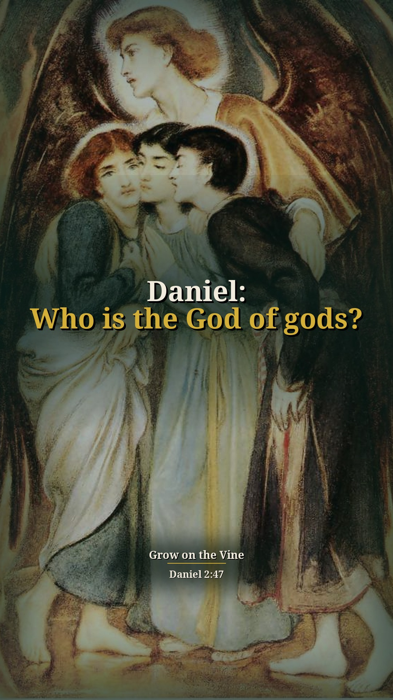
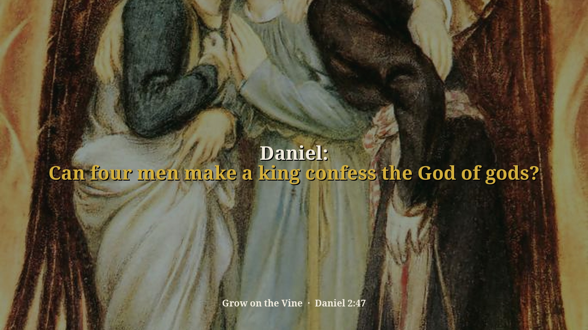
Other title options:
- Daniel: Who is the God of gods?
- Daniel: Can four change a king?
YouTube description (draft)
Daniel: Can four men make a king confess the God of gods? Read the short answer, the Scripture (NKJV) and the pastor's own words: https://growonthevine.com/clips/daniel-who-is-the-god-of-gods/ To see the full message, click here: https://www.youtube.com/watch?v=ZbUUKlFepUo&t=1255s Nebuchadnezzar confessed, “Your God is a God of gods and a Lord of kings.” Pastor Kincer says the king got instructed — then made Daniel and his friends rulers. Yes. Pastor Kincer says four young followers of God impacted the pagan king of Babylon until he admitted their God was the real God. Daniel 2:47 (NKJV) Pastor David G. Kincer · Grow on the Vine Music: "Enchanted Journey" Kevin MacLeod (incompetech.com) Licensed under Creative Commons: By Attribution 4.0 License http://creativecommons.org/licenses/by/4.0/ #Shorts #Bible #Jesus
Civil Disobedience Part 1
Daniel: Who pays for obeying evil orders?
Our short summary of this clip, not the preacher's exact words
Short answer: The king’s mightiest men bind Shadrach, Meshach and Abednego and throw them in — and the flame kills the men who obeyed the evil order. Pastor Kincer connects that to Germans who died carrying out Hitler’s orders, Americans who died in a war he says we never intended to win, and civil servants who promote homosexuality. Fear of disobedience is how dictators stay in power, and how the church slides under Satan’s authority without saying so.
Why: The deaths of the king’s own soldiers are the punch line for ‘who pays for obeying evil orders,’ and the modern parallels are the application — kept with the story.
“Now, folks, I was 30 foot away from this fire and I was cooking.”
▶ 26:27
“And this is how the church comes back under the authority of Satan without saying it for fear”
▶ 27:24
“of people not liking them.”
▶ 27:33
“The flame of fire slew those men that took up Shadrach, Meshak, and Abednego.”
▶ 27:56
“You see how timely this is for us?”
▶ 29:04
Daniel 3:19-22 Then Nebuchadnezzar was full of fury, and the expression on his face changed toward Shadrach, Meshach, and Abed-Nego. He spoke and commanded that they heat the furnace seven times more than it was usually heated. And he commanded certain mighty men of valor who were in his army to bind Shadrach, Meshach, and Abed-Nego, and cast them into the burning fiery furnace. Then these men were bound in their coats, their trousers, their turbans, and their other garments, and were cast into the midst of the burning fiery furnace. Therefore, because the king’s command was urgent, and the furnace exceedingly hot, the flame of the fire killed those men who took up Shadrach, Meshach, and Abed-Nego.
Daniel 3:22 Therefore, because the king’s command was urgent, and the furnace exceedingly hot, the flame of the fire killed those men who took up Shadrach, Meshach, and Abed-Nego.
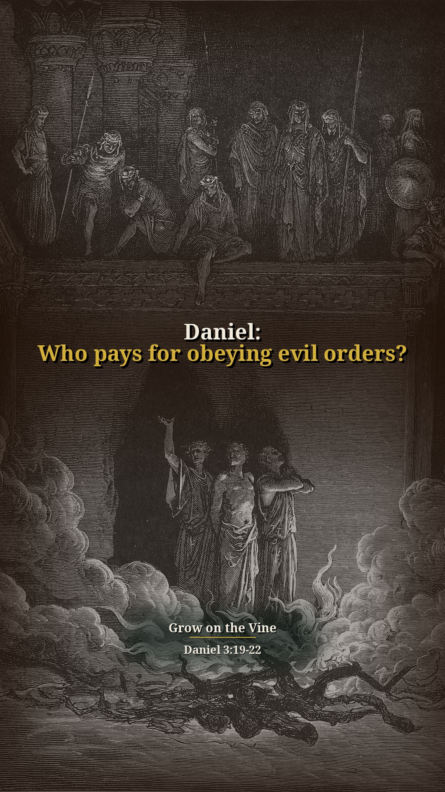
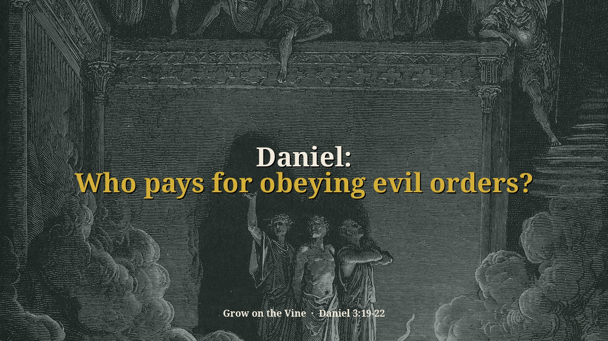
Other title options:
- Daniel: Into the furnace
- Daniel: What happened to the men who threw them in?
YouTube description (draft)
Daniel: Who pays for obeying evil orders? Read the short answer, the Scripture (NKJV) and the pastor's own words: https://growonthevine.com/clips/daniel-into-the-furnace/ To see the full message, click here: https://www.youtube.com/watch?v=7G8z7P7I4Qk&t=1578s The king’s mightiest men bind Shadrach, Meshach and Abednego and throw them in — and the flame kills the men who obeyed the evil order. Pastor Kincer connects that to Germans who died carrying out Hitler’s orders, Americans who died in a war he says we never intended to win, and civil servants who promote homosexuality. Fear of disobedience is how dictators stay in power, and how the church slides under Satan’s authority without saying so. Daniel 3:19-22 (NKJV) Pastor David G. Kincer · Grow on the Vine Music: "Fresh Air" Kevin MacLeod (incompetech.com) Licensed under Creative Commons: By Attribution 4.0 License http://creativecommons.org/licenses/by/4.0/ #Shorts #Bible #Jesus
Daniel: Would you bow, or claim God and keep sinning?
Our short summary of this clip, not the preacher's exact words
Short answer: Shadrach, Meshach, and Abednego would not. When asked if it was true they would not bow, they said yes — they would not worship the king’s image. He says Nebuchadnezzar admitted the God of gods yet arrogantly defied Him, and presidents Clinton, Bush Jr. and Obama all said they were Christians; Clinton could commit adultery, including with young interns, and say "My religion forgives me." He adds a preacher who said all religions, even atheists and Muslims, go to heaven.
Why: Pastor Kincer walks Daniel 3: the king in a rage brings them in and offers one more chance to fall down and worship or be cast into the furnace. Nebuchadnezzar had already acknowledged their God (Daniel 2:47), yet said "who is the god who will deliver you from my hands?" (Daniel 3:15).
“down and wor worship the image that I made?" Do you know how many Christians in America got”
▶ 14:15
“Now, of course, they said, "What?" Yep, it's true.”
▶ 14:59
“building and say this statement, "My religion forgives me." Well, why did Protestants become Protestants?”
▶ 16:10
“"Do all religions lead to the same God?" Yes, they do.”
▶ 17:08
“What Christianity you got?”
▶ 17:16
Daniel 3:14-18 Nebuchadnezzar spoke, saying to them, “Is it true, Shadrach, Meshach, and Abed-Nego, that you do not serve my gods or worship the gold image which I have set up? Now if you are ready at the time you hear the sound of the horn, flute, harp, lyre, and psaltery, in symphony with all kinds of music, and you fall down and worship the image which I have made, good! But if you do not worship, you shall be cast immediately into the midst of a burning fiery furnace. And who is the god who will deliver you from my hands?” Shadrach, Meshach, and Abed-Nego answered and said to the king, “O Nebuchadnezzar, we have no need to answer you in this matter. If that is the case, our God whom we serve is able to deliver us from the burning fiery furnace, and He will deliver us from your hand, O king. But if not, let it be known to you, O king, that we do not serve your gods, nor will we worship the gold image which you have set up.”
Daniel 3:15 Now if you are ready at the time you hear the sound of the horn, flute, harp, lyre, and psaltery, in symphony with all kinds of music, and you fall down and worship the image which I have made, good! But if you do not worship, you shall be cast immediately into the midst of a burning fiery furnace. And who is the god who will deliver you from my hands?”
Daniel 2:47 The king answered Daniel, and said, “Truly your God is the God of gods, the Lord of kings, and a revealer of secrets, since you could reveal this secret.”
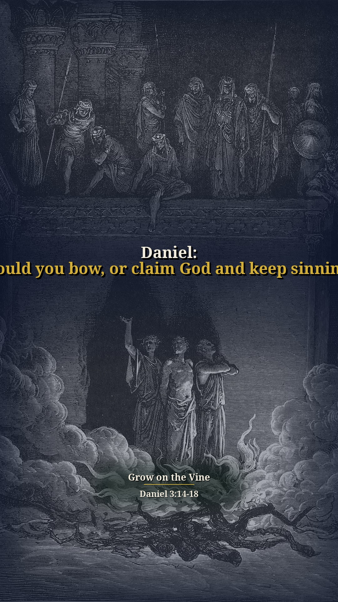
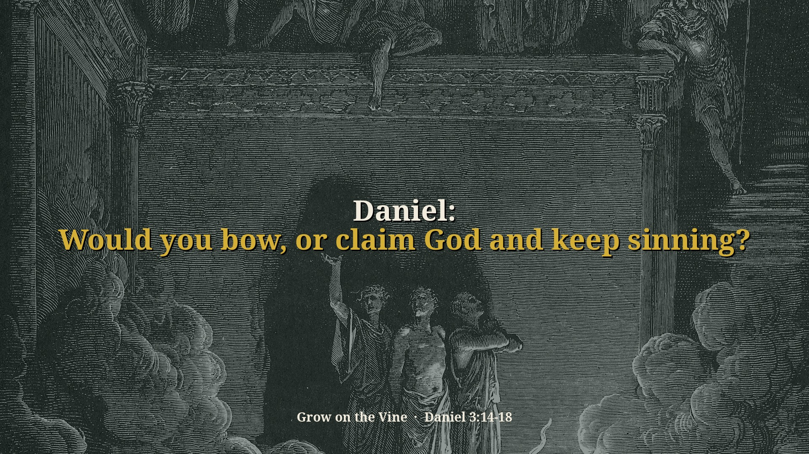
Other title options:
- Daniel: Would you bow to the idol?
- Daniel: Does "my religion forgives me" work?
YouTube description (draft)
Daniel: Would you bow, or claim God and keep sinning? Read the short answer, the Scripture (NKJV) and the pastor's own words: https://growonthevine.com/clips/daniel-would-you-bow/ To see the full message, click here: https://www.youtube.com/watch?v=7G8z7P7I4Qk&t=843s Shadrach, Meshach, and Abednego would not. When asked if it was true they would not bow, they said yes — they would not worship the king’s image. He says Nebuchadnezzar admitted the God of gods yet arrogantly defied Him, and presidents Clinton, Bush Jr. and Obama all said they were Christians; Clinton could commit adultery, including with young interns, and say "My religion forgives me." He adds a preacher who said all religions, even atheists and Muslims, go to heaven. Daniel 3:14-18 (NKJV) Pastor David G. Kincer · Grow on the Vine Music: "Sapphire Isle" Kevin MacLeod (incompetech.com) Licensed under Creative Commons: By Attribution 4.0 License http://creativecommons.org/licenses/by/4.0/ #Shorts #Bible #Jesus
Daniel: What is civil disobedience, and is our God able?
Our short summary of this clip, not the preacher's exact words
Short answer: Their reply is civil disobedience: they told the king they did not need an attorney, prophet, or prayer line — they already knew they would not bow. He says if God cannot intervene in the affairs of men and change America and the church, we would be serving a worthless God, just like the Hindus and Buddhists; but he is not serving a worthless God. Like the three Hebrews, God is able, and even if not, we will not bow.
Why: Pastor Kincer frames Daniel 3 as the challenge when civil authorities make laws immoral compared to Scripture. Daniel 3:17–18: "our God whom we serve is able to deliver us... But if not... we do not serve your gods."
“And if there is a God and we don't have any hope that America and the church in”
▶ 1:44
“America can be changed, then we're serving a worthless God.”
▶ 1:53
“>> Could you say amen to that?”
▶ 2:08
“If it be so, he will deliver us out of your hand, O king.”
▶ 21:00
“eyeball to eyeball that we are not serving your gods and we are not bowing to your idol.”
▶ 21:17
Acts 5:29 But Peter and the other apostles answered and said: “We ought to obey God rather than men.
Daniel 3:16-18 Shadrach, Meshach, and Abed-Nego answered and said to the king, “O Nebuchadnezzar, we have no need to answer you in this matter. If that is the case, our God whom we serve is able to deliver us from the burning fiery furnace, and He will deliver us from your hand, O king. But if not, let it be known to you, O king, that we do not serve your gods, nor will we worship the gold image which you have set up.”
Daniel 3:17-18 If that is the case, our God whom we serve is able to deliver us from the burning fiery furnace, and He will deliver us from your hand, O king. But if not, let it be known to you, O king, that we do not serve your gods, nor will we worship the gold image which you have set up.”
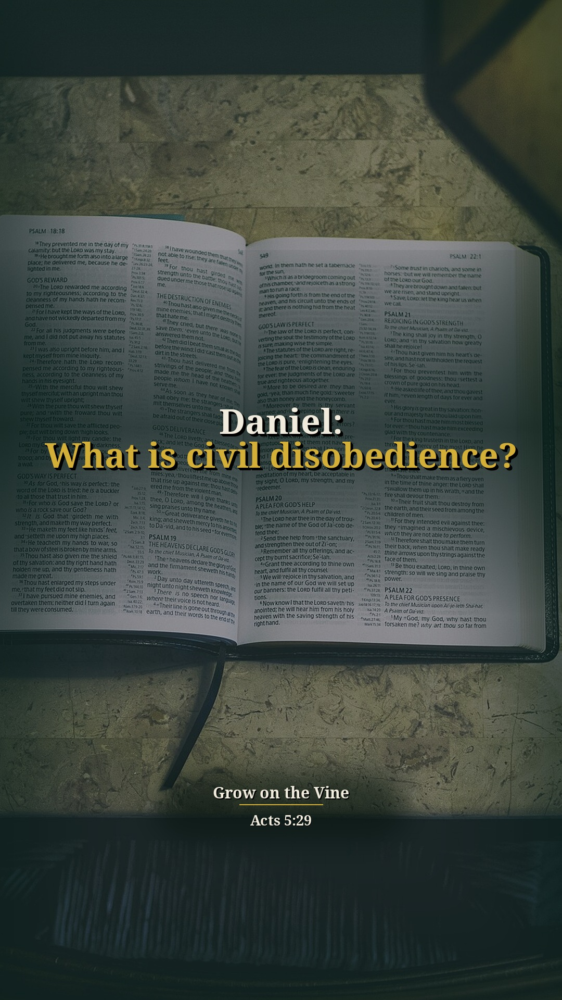
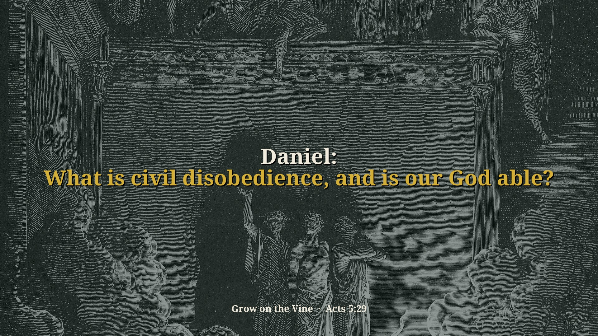
Other title options:
- Daniel: What is civil disobedience?
- Daniel: But if not?
YouTube description (draft)
Daniel: What is civil disobedience, and is our God able? Read the short answer, the Scripture (NKJV) and the pastor's own words: https://growonthevine.com/clips/daniel-what-is-civil-disobedience/ To see the full message, click here: https://www.youtube.com/watch?v=7G8z7P7I4Qk&t=100s Their reply is civil disobedience: they told the king they did not need an attorney, prophet, or prayer line — they already knew they would not bow. He says if God cannot intervene in the affairs of men and change America and the church, we would be serving a worthless God, just like the Hindus and Buddhists; but he is not serving a worthless God. Like the three Hebrews, God is able, and even if not, we will not bow. Acts 5:29 (NKJV) Pastor David G. Kincer · Grow on the Vine Music: "Windswept" Kevin MacLeod (incompetech.com) Licensed under Creative Commons: By Attribution 4.0 License http://creativecommons.org/licenses/by/4.0/ #Shorts #Bible #Jesus
Civil Disobedience Part 2
Daniel: Does God promote the faithful?
Our short summary of this clip, not the preacher's exact words
Short answer: After the furnace, the king promoted Shadrach, Meshach and Abednego in Babylon — they got their jobs back and better ones. Pastor Kincer says that is the second time their economic problems were changed in a moment, and that God still promotes people who will not bow when the culture demands it.
Why: The promotion only makes sense after the furnace stand, so the Short keeps the aftermath with the reward.
“>> Now, whose fault is it?”
▶ 6:52
“See, this king has the right confession, but he is not making Jesus Christ Lord of his life”
▶ 7:03
“How many you know we got a lot of that in America?”
▶ 7:18
“Didn't Jesus say, "Seek you first the kingdom of God and his righteousness, and all these things, what”
▶ 8:08
“Turn or you're going to wind up in hell and burn." Ain't that right?”
▶ 9:09
Daniel 3:30 Then the king promoted Shadrach, Meshach, and Abed-Nego in the province of Babylon.
Matthew 6:33 But seek first the kingdom of God and His righteousness, and all these things shall be added to you.
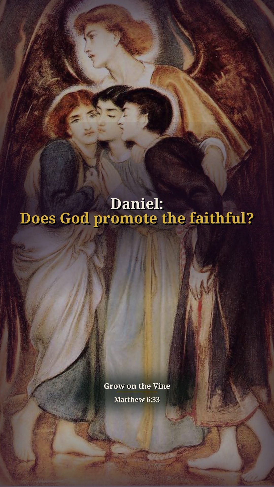
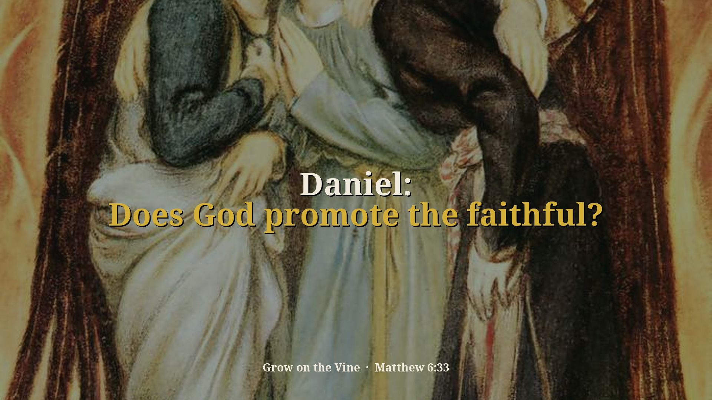
Other title options:
- Daniel: What if you lose the job twice?
- Daniel: Will seeking Him first still work?
YouTube description (draft)
Daniel: Does God promote the faithful? Read the short answer, the Scripture (NKJV) and the pastor's own words: https://growonthevine.com/clips/daniel-does-god-promote-the-faithful/ To see the full message, click here: https://www.youtube.com/watch?v=zI1DI8B_gYc&t=400s After the furnace, the king promoted Shadrach, Meshach and Abednego in Babylon — they got their jobs back and better ones. Pastor Kincer says that is the second time their economic problems were changed in a moment, and that God still promotes people who will not bow when the culture demands it. Matthew 6:33 (NKJV) Pastor David G. Kincer · Grow on the Vine Music: "Faith In Tomorrow" Kevin MacLeod (incompetech.com) Licensed under Creative Commons: By Attribution 4.0 License http://creativecommons.org/licenses/by/4.0/ #Shorts #Bible #Jesus
Daniel: Is America under God's discipline?
Our short summary of this clip, not the preacher's exact words
Short answer: He says if you don't heed God's call there will be disciplinary action: cholera, yellow fever and the Spanish flu killed many, AIDS has killed millions worldwide and over half a million in America, and we went from three sexually transmitted diseases before 1960 to 40. After the Jesus people movement, laws changed on homosexuality and abortion, prayer was taken out, and we've been declining ever since.
Why: Nebuchadnezzar learned that those who walk in pride God is able to put down (Daniel 4:37).
“The uh Spanish flu or influenza killed millions of people worldwide and here in America.”
▶ 11:24
“all these laws started changing homosexuals and abortion and all this stuff and Jesus not accepted in public”
▶ 17:49
“all we've been declining ever since and there's been a visitation of God calling us back to what?”
▶ 18:00
“Were the churches filled after 911?”
▶ 18:30
“Folks, why do we got to wait for a calamity to seek our God?”
▶ 18:45
Daniel 4:37 Now I, Nebuchadnezzar, praise and extol and honor the King of heaven, all of whose works are truth, and His ways justice. And those who walk in pride He is able to put down.
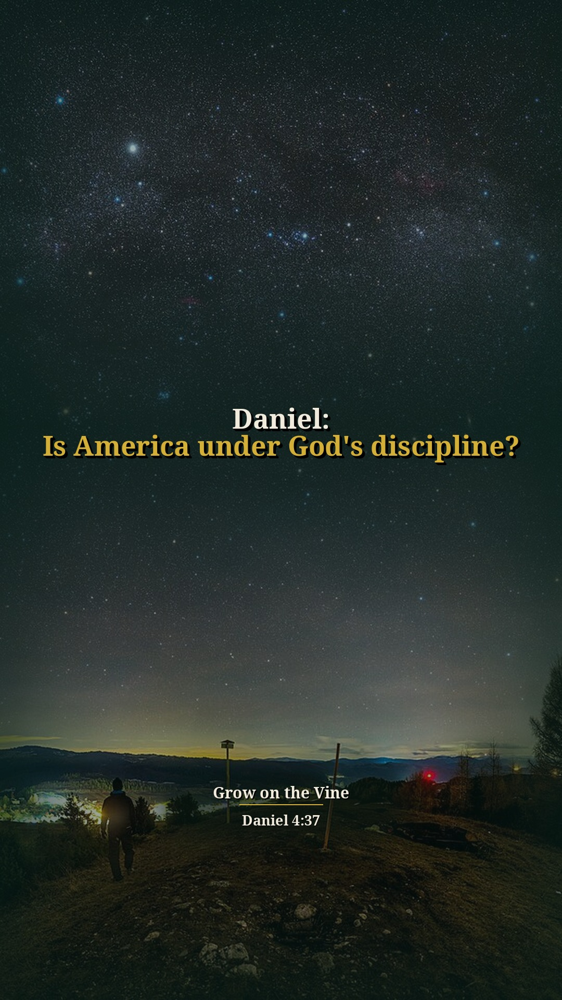
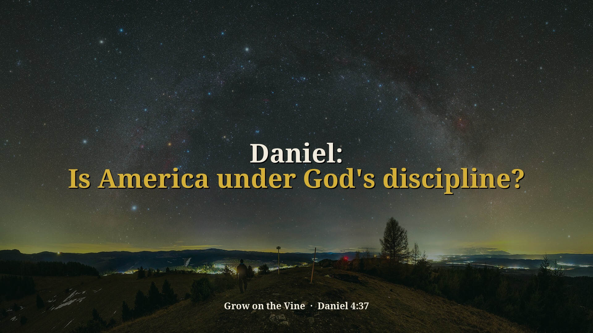
Other title options:
- Daniel: Why is America declining?
- Daniel: What happens when we ignore God's call?
YouTube description (draft)
Daniel: Is America under God's discipline? Read the short answer, the Scripture (NKJV) and the pastor's own words: https://growonthevine.com/clips/daniel-why-is-america-declining/ To see the full message, click here: https://www.youtube.com/watch?v=zI1DI8B_gYc&t=663s He says if you don't heed God's call there will be disciplinary action: cholera, yellow fever and the Spanish flu killed many, AIDS has killed millions worldwide and over half a million in America, and we went from three sexually transmitted diseases before 1960 to 40. After the Jesus people movement, laws changed on homosexuality and abortion, prayer was taken out, and we've been declining ever since. Daniel 4:37 (NKJV) Pastor David G. Kincer · Grow on the Vine Music: "Windswept" Kevin MacLeod (incompetech.com) Licensed under Creative Commons: By Attribution 4.0 License http://creativecommons.org/licenses/by/4.0/ #Shorts #Bible #Jesus
Daniel: What is civil government for?
Our short summary of this clip, not the preacher's exact words
Short answer: Pastor Kincer teaches that civil government is God’s servant to restrain evil and praise good, not to redefine sin. He warns that when leaders and citizens chase sexual immorality, drunkenness and the party life, a nation loses the moral ground government was meant to guard — and that believers must not live that way while asking God to heal the land.
Why: The lifestyle warning is the reason he is defining what civil government is for, so the Short keeps that context with Romans 13’s purpose.
“Did Jesus come to make disciples or believers?”
▶ 23:57
“They believed in God who created the world.”
▶ 24:12
“Get out of this mentality that because you're a believer, you're a God's going to magically watch over”
▶ 24:27
“What is the purpose of civil government?”
▶ 25:00
“And what do we have in America?”
▶ 25:17
Romans 13:3-4 For rulers are not a terror to good works, but to evil. Do you want to be unafraid of the authority? Do what is good, and you will have praise from the same. For he is God’s minister to you for good. But if you do evil, be afraid; for he does not bear the sword in vain; for he is God’s minister, an avenger to execute wrath on him who practices evil.
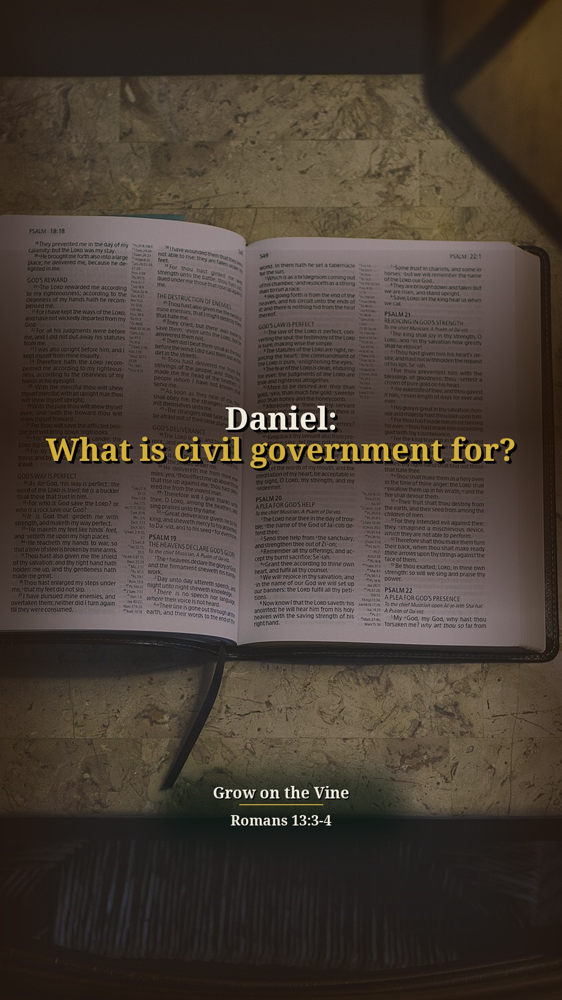
Other title options:
- Daniel: Should Christians be told to shut up about Jesus?
- Daniel: Why is the Bible out of schools?
YouTube description (draft)
Daniel: What is civil government for? Read the short answer, the Scripture (NKJV) and the pastor's own words: https://growonthevine.com/clips/daniel-what-is-government-for/ To see the full message, click here: https://www.youtube.com/watch?v=zI1DI8B_gYc&t=1385s Pastor Kincer teaches that civil government is God’s servant to restrain evil and praise good, not to redefine sin. He warns that when leaders and citizens chase sexual immorality, drunkenness and the party life, a nation loses the moral ground government was meant to guard — and that believers must not live that way while asking God to heal the land. Romans 13:3-4 (NKJV) Pastor David G. Kincer · Grow on the Vine Music: "Windswept" Kevin MacLeod (incompetech.com) Licensed under Creative Commons: By Attribution 4.0 License http://creativecommons.org/licenses/by/4.0/ #Shorts #Bible #Jesus
Daniel: Who is the fourth man in the fire?
Our short summary of this clip, not the preacher's exact words
Short answer: The king saw four men loose in the fire, and the fourth like the Son of God. Pastor Kincer says he had a revelation of Jesus before the virgin birth. The fire had no power: hair and clothes unsinged, no smell of fire. Pastor Kincer says God delivered His servants who trusted Him — and trust means you act. They changed the king’s word and yielded their bodies. Pastor Kincer says anyone can say “I love Jesus,” but disciplining the body to live like a believer is what changes a nation.
Why: Thrown into the furnace, they were unhurt; the fourth presence is the God who can turn nations when a few people decide to do right. Confession without embodied obedience will not turn a church or a country.
“I threw three in and there's four people in there walking in the midst of the fire.”
▶ 1:16
“Now, who's the son of God?”
▶ 1:28
“THAT'S THE GOD THAT WE HAVE, CHURCH.”
▶ 1:41
“Their hair wasn't singed, their clothing wasn't singed, and there was no smell of fire upon them.”
▶ 2:46
“Isn't this book good in Daniel?”
▶ 4:45
Daniel 3:24-25 Then King Nebuchadnezzar was astonished; and he rose in haste and spoke, saying to his counselors, “Did we not cast three men bound into the midst of the fire?” They answered and said to the king, “True, O king.” “Look!” he answered, “I see four men loose, walking in the midst of the fire; and they are not hurt, and the form of the fourth is like the Son of God.”
Daniel 3:27-28 And the satraps, administrators, governors, and the king’s counselors gathered together, and they saw these men on whose bodies the fire had no power; the hair of their head was not singed nor were their garments affected, and the smell of fire was not on them. Nebuchadnezzar spoke, saying, “Blessed be the God of Shadrach, Meshach, and Abed-Nego, who sent His Angel and delivered His servants who trusted in Him, and they have frustrated the king’s word, and yielded their bodies, that they should not serve nor worship any god except their own God!
Daniel 3:28 Nebuchadnezzar spoke, saying, “Blessed be the God of Shadrach, Meshach, and Abed-Nego, who sent His Angel and delivered His servants who trusted in Him, and they have frustrated the king’s word, and yielded their bodies, that they should not serve nor worship any god except their own God!
Romans 12:1 I beseech you therefore, brethren, by the mercies of God, that you present your bodies a living sacrifice, holy, acceptable to God, which is your reasonable service.
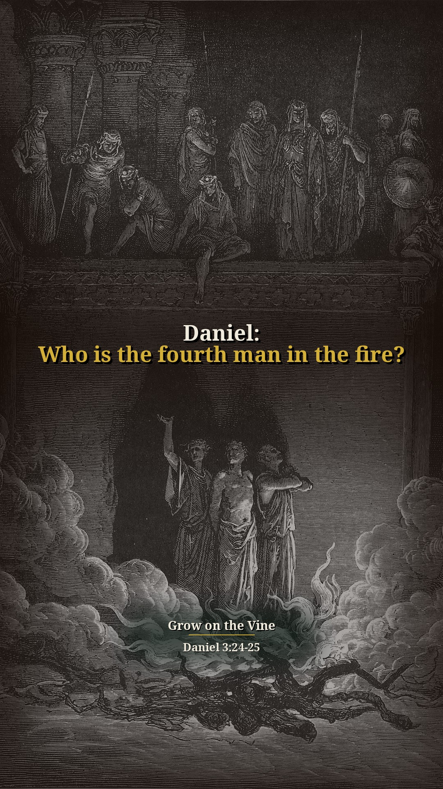
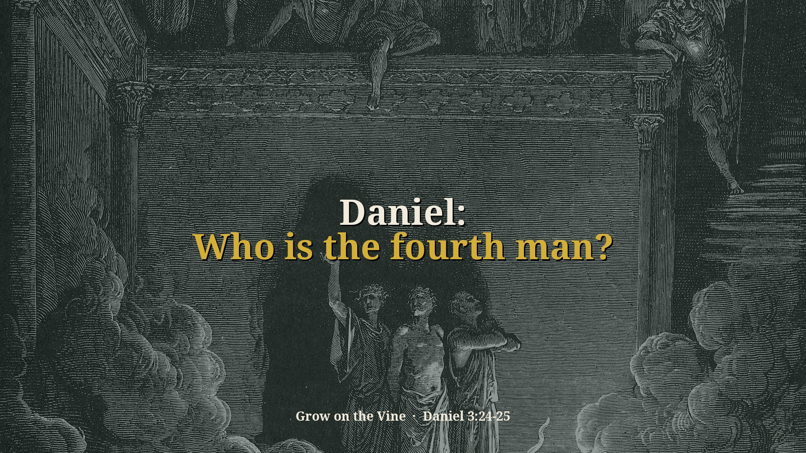
Other title options:
- Daniel: Can fire touch you?
- Daniel: Will you yield your body?
YouTube description (draft)
Daniel: Who is the fourth man in the fire? Read the short answer, the Scripture (NKJV) and the pastor's own words: https://growonthevine.com/clips/daniel-who-is-the-fourth-man/ To see the full message, click here: https://www.youtube.com/watch?v=zI1DI8B_gYc&t=52s The king saw four men loose in the fire, and the fourth like the Son of God. Pastor Kincer says he had a revelation of Jesus before the virgin birth. The fire had no power: hair and clothes unsinged, no smell of fire. Pastor Kincer says God delivered His servants who trusted Him — and trust means you act. They changed the king’s word and yielded their bodies. Pastor Kincer says anyone can say “I love Jesus,” but disciplining the body to live like a believer is what changes a nation. Daniel 3:24-25 (NKJV) Pastor David G. Kincer · Grow on the Vine Music: "Wholesome" Kevin MacLeod (incompetech.com) Licensed under Creative Commons: By Attribution 4.0 License http://creativecommons.org/licenses/by/4.0/ #Shorts #Bible #Jesus